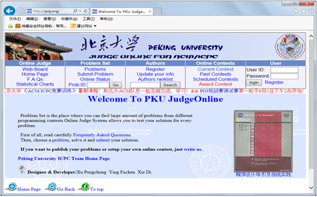
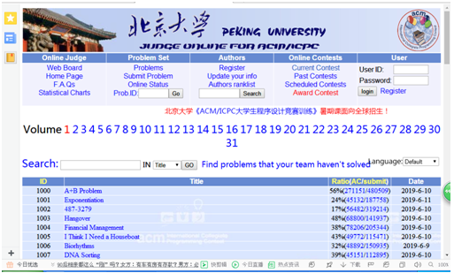
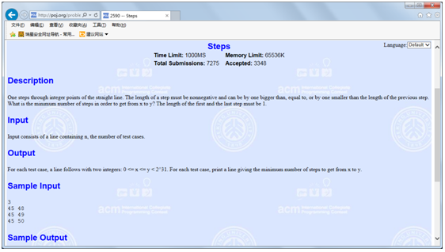
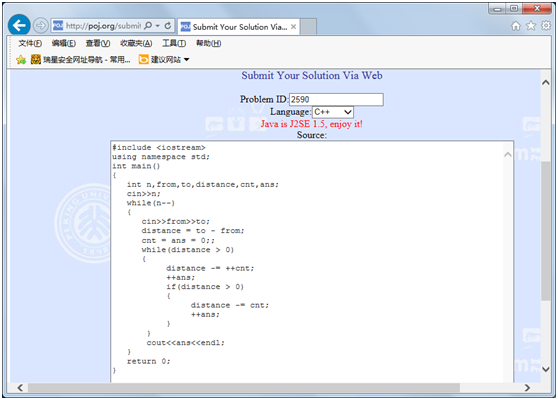

Online Judge系统（简称OJ）是一个在线的判题系统。用户可以在线提交给定问题的多种程序（如C、C++、Pascal、Java）源代码，系统对源代码进行编译和执行，并通过预先设计的测试数据来检验程序源代码的正确性。
一个用户提交的程序在Online Judge系统下执行时将受到比较严格的限制，包括运行时间限制、内存使用限制和安全限制等。用户程序执行的结果将被Online Judge系统捕捉并保存，然后再转交给一个裁判程序。该裁判程序或者比较用户程序的输出数据和标准输出样例的差别，或者检验用户程序的输出数据是否满足一定的逻辑条件。最后系统返回给用户一个状态：通过（Accepted）、答案错误（Wrong Answer）、超时（Time Limit Exceed）、超过输出限制（Output Limit Exceed）、超内存（Memory Limit Exceed）、运行时错误（Runtime Error）、格式错误（Presentation Error)、无法编译（Compile Error），并返回程序使用的内存、运行时间等信息。在线测评系统的评判情况如表1所示。
表1 测评系统的评判结果
|
评判 |
缩写 |
说明 |
|
Accepted |
AC |
程序通过了所有的测试点，被判为正确 |
|
Presentation Error |
PE |
程序的输出结果是正确的，但是格式不符 |
|
Time Limit Exceeded |
TLE |
程序运行超过了限定的时间，可能是超过总时间限定，也可能是超过单个测试点时间限制 |
|
Memory Limit Exceeded |
MLE |
程序运行超过了所需的内存限制 |
|
Wrong Answer |
WA |
程序的输出结果不对 |
|
Runtime Error |
RE |
程序在运行时产生了无法处理的异常 |
|
Output Limit Exceeded |
OLE |
程序产生了多余的输出 |
|
Compile Error |
CE |
程序无法通过编译 |
|
System Error |
|
在线测评平台无法运行该程序 |
|
Validator Error |
|
检验程序在校验输出结果时出现异常 |
Online Judge系统最初使用于ACM-ICPC国际大学生程序设计竞赛和OI信息学奥林匹克竞赛中的自动判题和排名。现广泛应用于世界各地高校学生程序设计的训练、参赛队员的训练和选拔、各种程序设计竞赛以及数据结构和算法的学习和作业的自动提交判断中。
国内较好的在线测评系统有：
北京大学的PKU JudgeOnline（http://poj.org/ ）
浙江大学ACM在线测试（http://acm.zju.edu.cn/onlinejudge/ ）
杭州电子科技大学的HDU Online Judge System （http://acm.hdu.edu.cn/）
在亚洲，北京大学的PKU JudgeOnline在线测评系统是规模最大、品质最高的在线测评系统。在IE浏览器的地址栏输入http://poj.org/，打开PKU JudgeOnline网站，出现如图1所示的主页。

图2-1 PKU JudgeOnline主页
在PKU JudgeOnline网站中，提供了4千多道题目。用户可以在该网站中注册一个用户ID，然后选择某个问题进行求解。用户可以将编写的程序通过网页提交给在线测评系统，每一次提交后，测评系统都会将评判结果显示在网页上。
用户可以根据测评系统反馈回来的评判结果修改程序，直到最终收获Accepted。这个过程不仅能培养用户独立分析问题、解决问题的能力，而且每成功解决一个问题都能给用户带来极大的成就感。
在PKU JudgeOnline主页单击超链接“Problems”，可打开如图2所示的页面。在页面中用列表的形式显示了系统中提供的各个问题，例如，页面中显示的“1000、A+B Problem、 56%(271151/480509)、2019-6-10，表示ID号为“1000”的题目“A+B Problem”截止到2019年6月10日，有480509人次提交了程序，其中有271151次通过。

图2 Problems 列表
在列表中可以选定某个问题，单击Title下的超链接，可以打开对应问题的页面。例如，单击ID号为2590的问题“Steps”超链接，或者在“Prob ID：”文本框中输入“2590”，单击“Go”按钮，可以打开如图3所示的页面。

图3 题目“Steps”的描述信息
这道题目的意思是：给出在数轴上的两个整点x、y（0<=x、y<2^31），问从x移动到y至少需要几步？移动时要求：（1）每一步可以比上一步长1、短1或相等；（2）第一步和最后一步必须是1。
输入数轴上的两个点from和to后，需要移动的距离就确定了distance=to-from。由于移动时，第一步和最后一步必须是1，且每一步与上一步相差不超过1。因此最快的移动方式应该为从1开始递增（每次加1）移动到中点附近，然后递减（每次减1）移动到终点。由于递增和递减的两个过程可以基本看成是对称的，因此设置一个变量cnt来记录每次移动的步数，初始值为0。移动时，从总距离distance上减去递增过程中的cnt和递减过程中的cnt，直到distance不再大于0。
例如，从10移动到19，需要移动的情况为：distance=19-10=9。
9-1（第1步）=8-1（最后1步）=7>0
7-2（第2步）=5-2（倒数第2步）=3>0
3-3（第3步）=0 结束。
#include <iostream>
using namespace std;
int main()
{
int n,from,to,distance,cnt,ans;
cin>>n;
while(n--)
{
cin>>from>>to;
distance = to - from;
cnt = ans = 0;;
while(distance > 0)
{
distance -= ++cnt;
++ans;
if(distance > 0)
{
distance -= cnt;
++ans;
}
}
cout<<ans<<endl;
}
return 0;
}
在写出了该问题的程序后，可以将其提交给测评系统评判。单击主页中的“Submit Problem”超链接，打开如图4所示的提交页面。在“Problem ID”后的文本框中输入“2590”，在“Language”下拉列表框中选择语言为“C++”，在“Source”多行文本框中输入所编写的程序，单击“Submit”按钮，即可将程序提交给测评系统。之后，测评系统会打开一个页面显示评判后的结果。

图4 程序提交页面
PKU JudgeOnline作为一个优秀的开放式程序在线评测平台，值得程序设计爱好者好好利用。特别是计算机类专业的学生，可以充分利用自己的课余时间和上机实验课时间，随时上网做题，一旦提交答案，马上可以知道对错，从而极大地调动学习的积极性和主动性，大大提高实际的编程能力。